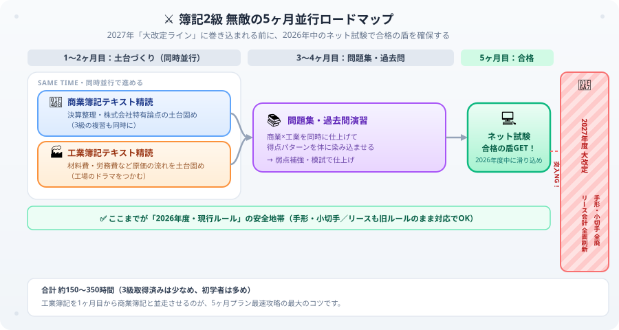

日商簿記2級の勉強時間・独学合格ロードマップ【2026年版】
日商簿記2級は経理・財務職を目指すなら絶対に持っておきたい資格で、就職・転職でも本当に強い武器になります。ただ合格率は20〜30%、近年はさらに難化傾向なので、3級とはまったく別物だと思って準備してください。正直に告白すると、僕は3級に合格した高揚感そのままに2級のテキストを開いて、開いた瞬間に固まりました。目に飛び込んできたのは分厚い仕訳が並ぶ「連結会計」と、3級では影も形もなかった完全新顔の科目「工業簿記」。頭の中で「うわっ、なんじゃこりゃ！3級の10倍ムズいじゃん…！」と盛大にパニックを起こし、テキストをそっと閉じて現実逃避したのを今でも覚えています（笑）。でも安心してください、あのパニックには理由があって、正しい順番とコツさえ知っていれば誰でも乗り越えられます。この記事では、あの日の自分に教えてあげたかった2級合格に必要な勉強時間・学習ルート・科目別の攻略法を大谷が全部まとめました。ぜひ最後まで読んでいただけると嬉しいです。
2026年度の出題範囲は変更なし。ただし2027年度から簿記2級に大きな改定が予定されています。主な変更点：
・手形・小切手の論点が全廃（紙媒体の手形・小切手が実務廃止のため）
・リース会計が全面改定：ファイナンス・リース／オペレーティング・リースの区分がなくなり、「使用権資産」「リース負債」という新勘定科目が登場
・1級→2級に移行：売掛債権の譲渡（ファクタリング・2社間／3社間の簡易版）
・2級→3級に移行：都度法・固定資産の除却廃棄・定率法
2027年度以降に受験予定の方は、最新テキストで学習してください。
簿記2級の基本情報
| 項目 | 内容 |
|---|---|
| 試験形式 | 統一試験（6月・11月・2月）+ ネット試験（随時） |
| 合格率 | 20〜30%（近年は難化傾向で20%を下回る回もある） |
| 合格基準 | 70点以上（100点満点） |
| 試験時間 | 90分 |
| 必要勉強時間 | 3級取得済み：150〜200時間、初学者：250〜350時間 |
2級と3級の違い：何が増えるのか
| 項目 | 3級 | 2級 |
|---|---|---|
| 対象企業 | 個人商店 | 株式会社 |
| 主な追加内容 | — | 工業簿記・連結会計・税効果会計 |
| 問題数 | 5問 | 5問（難易度・複雑さが大幅増） |
| 試験時間 | 60分 | 90分 |
⚠ 2027年大改定リスクについて：今から5ヶ月プランで進める場合、途中で不合格になると2027年の大改定（リース会計の全面刷新・手形全廃など）の直撃を受けるリスクがあります。改定後はテキストの大幅な買い替えが必要になり、学習コストが急増します。
改定と聞くと怖くなりますが、いつでも受けられる【ネット試験】を味方にすれば大丈夫です。2026年度内の早期合格は絶対に目指せます。僕のブログの図解つき解説記事（この下にある学習ガイド）をフル活用して、一緒に最速で突破しましょう！
科目別の勉強時間配分
| 科目 | 出題割合 | 勉強時間の目安 | 攻略の優先度 |
|---|---|---|---|
| 商業簿記 | 60%（60点分） | 100〜130時間 | 高 |
| 工業簿記 | 40%（40点分） | 60〜80時間 | 高（早めに着手） |
簿記2級の学習順ロードマップ
簿記2級は、思いついた順に手をつけると確実に迷子になります。商業簿記で決算整理と頻出仕訳を固めながら、工業簿記で原価の流れをつかむ——この2つを並行で進め、2027年の大改定ラインに入る前にネット試験へ滑り込む。それが下の全体図解が示す「無敵の5ヶ月ロードマップ」です。

1〜2ヶ月目は商業簿記と工業簿記の土台を同時並行、3〜4ヶ月目で問題集、5ヶ月目でネット試験に滑り込むタイムライン
商業簿記のおすすめ順
①〜③は決算整理の基本で、頻出仕訳の大半をここで習得します。④〜⑧は株式会社特有の論点で出題頻度が高く、⑨の連結会計は2級最難関のため最後に集中投下する順番にしています。
工業簿記のおすすめ順
⓪で全体像をつかんだ後、①〜③の材料費・労務費・経費はすべての原価計算の土台です。この3つを固めてから④以降の配賦・個別・総合・標準原価計算に進むと、計算の流れで迷いにくくなります。
商業簿記の攻略法
3級の延長として取り組む
商業簿記は3級の知識をベースに、株式会社特有の処理が積み重なっていくイメージです。株式発行・剰余金の配当・社債・税効果会計が主な新論点です。3級の仕訳があやしい場合は、先に復習を済ませてから2級に入ると断然スムーズです。
連結会計（最難関）
2級最難関はやはり連結会計です。親会社・子会社の財務諸表を合算して「グループ全体の財務状況」を見せる処理で、最初は仕訳の多さに圧倒されるかもしれません。でも焦らなくて大丈夫です。連結修正仕訳の流れを図で整理してから反復演習に入れば、必ず克服できます。「のれん」や「非支配株主持分」が実際の決算書のどこに出てくるか気になる人はソニーグループの実例で読む決算書解説もどうぞ。
頻出論点リスト
工業簿記の攻略法
「製造業の原価計算」という新しい世界
工業簿記は、製造業で「製品を作るのにいくらかかったか」を計算する学問です。材料費・労務費・製造間接費を集めて製品の原価を出す——という流れ自体はシンプルです。ただし商業簿記とは体系がまったく違うので、最初はゆっくりテキストを読み込むことだけを意識してください。焦って先に進もうとすると後で詰まります。
工業簿記の学習順序
- 原価の分類（1週間）：材料費・労務費・製造間接費の違いを理解する
- 個別原価計算（2週間）：受注生産における製品ごとの原価計算
- 総合原価計算（2週間）：大量生産における期末仕掛品の処理
- 標準原価計算・直接原価計算（2週間）：原価差異の分析・CVP分析
合格までの月別スケジュール（5ヶ月プラン）
| 月 | 内容 | 1日の目標時間 |
|---|---|---|
| 1ヶ月目 | 商業簿記テキスト精読（3級の復習含む） | 1.5〜2時間 |
| 2ヶ月目 | 工業簿記テキスト精読（全体像の把握） | 1.5〜2時間 |
| 3ヶ月目 | 商業簿記・工業簿記 問題集演習 | 2時間 |
| 4ヶ月目 | 過去問演習・弱点補強 | 2〜3時間 |
| 5ヶ月目 | 直前対策・模擬試験・総復習 | 2〜3時間 |
おすすめテキスト
※ 以下の教材リンクにはAmazonアソシエイトリンクを含みます。
商業簿記のテキスト
工業簿記のテキスト
動画で理解を補強する
簿記2級をテキストだけで進めると、連結会計・固定資産・引当金のあたりで必ず手が止まります。詰まったときはYouTubeの解説動画で図や話し言葉の説明を聞いてから、もう一度テキストに戻るのがおすすめです。「動画→テキスト→問題集」の往復が、独学で最速の突破ルートです。
まとめ
- 簿記2級の勉強時間は3級取得済みで150〜200時間、初学者で250〜350時間。計画を立てれば独学で十分合格できます
- 工業簿記は早めに着手するのが最大のカギ。商業簿記と並行して1ヶ月目から触れてください
- 商業簿記の最難関は連結会計。焦らず図で流れを整理してから演習に入れば必ず克服できます
- 2027年大改定前の2026年度内合格を最優先目標に。ネット試験を最大限活用してください
- 5ヶ月間、毎日1.5〜2時間継続できれば必ず合格できます。一緒に頑張りましょう！
2027年の大改定前に、市場価値をブチ上げる一歩を踏み出したあなたへ
工業簿記という未知の科目に飛び込み、2027年の大改定という時限爆弾が来る前に動き出しているあなたは、それだけでもう「市場価値を先取りする側」にいます。手形も小切手もリースも、今の知識のまま合格を掴み取ってしまえば、あとから慌てて学び直す必要はありません。この5ヶ月、しんどい日もあると思いますが、大谷も簿記1級の勉強を続けながら全力で応援しています。一緒に、2027年の大改定前に合格の景色を掴みましょう！
この記事が少しでも力になったら、執筆のモチベーション維持のために、この下にある【いいねボタン】をポチッと押してもらえるとめちゃくちゃ嬉しいです！